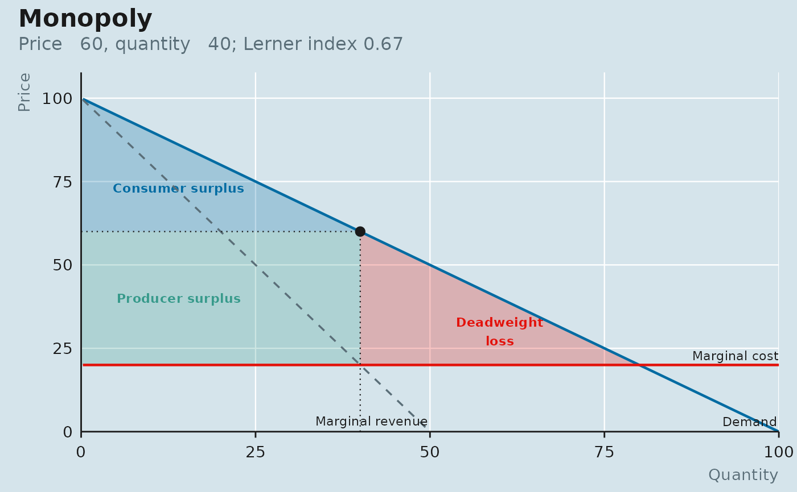
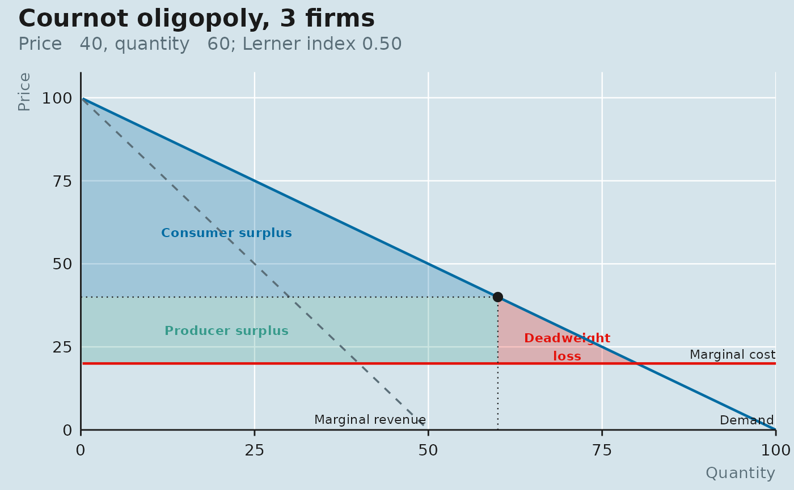
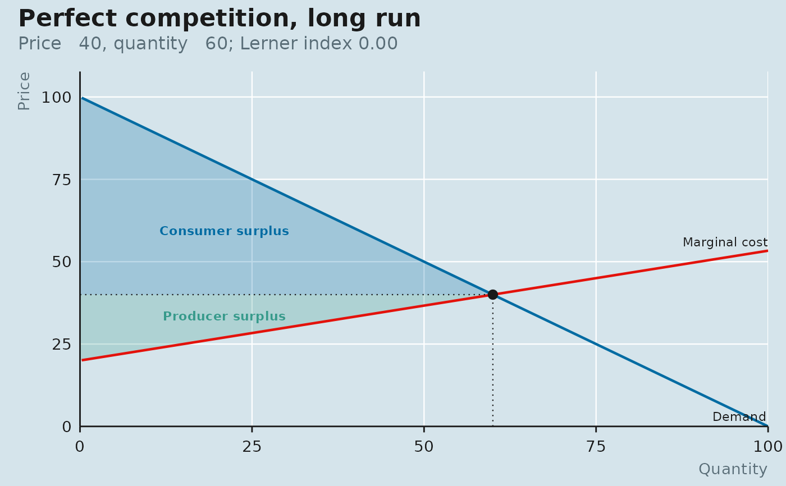

The demand curve, the industry marginal-cost curve (marginal cost at each firm's share of the quantity), marginal revenue where it matters, the outcome, and the welfare areas: consumer surplus above the price, producer surplus between the price and marginal cost, and the deadweight-loss triangle between the outcome and the efficient quantity.
Usage
plot_market(
outcome,
q_max = NULL,
shade = c("cs", "ps", "dwl"),
title = NULL,
subtitle = NULL,
source = NULL,
panel = "blue"
)Arguments
- outcome
A
market_outcomefrommonopoly(),cournot(),perfect_competition()orfirst_degree(). For first-degree discrimination the whole area between demand and marginal cost is shaded as producer surplus, since that is who gets it.- q_max
Right-hand limit of the quantity axis. Defaults to the demand curve's
q_max.- shade
Which areas to shade: any of
"cs","ps","dwl".- title, subtitle, source
Passed to
labs_econ(); sensible defaults are filled in.- panel
Passed to
theme_econ().
Value
A ggplot object. Add econ_masthead() last if you want the block.
Examples
d <- linear_demand(intercept = 100, slope = 1)
plot_market(monopoly(d, quadratic_cost(a = 20)))

plot_market(cournot(d, quadratic_cost(a = 20), n = 3))

plot_market(perfect_competition(d, quadratic_cost(fixed = 100, a = 20, b = 1)))
